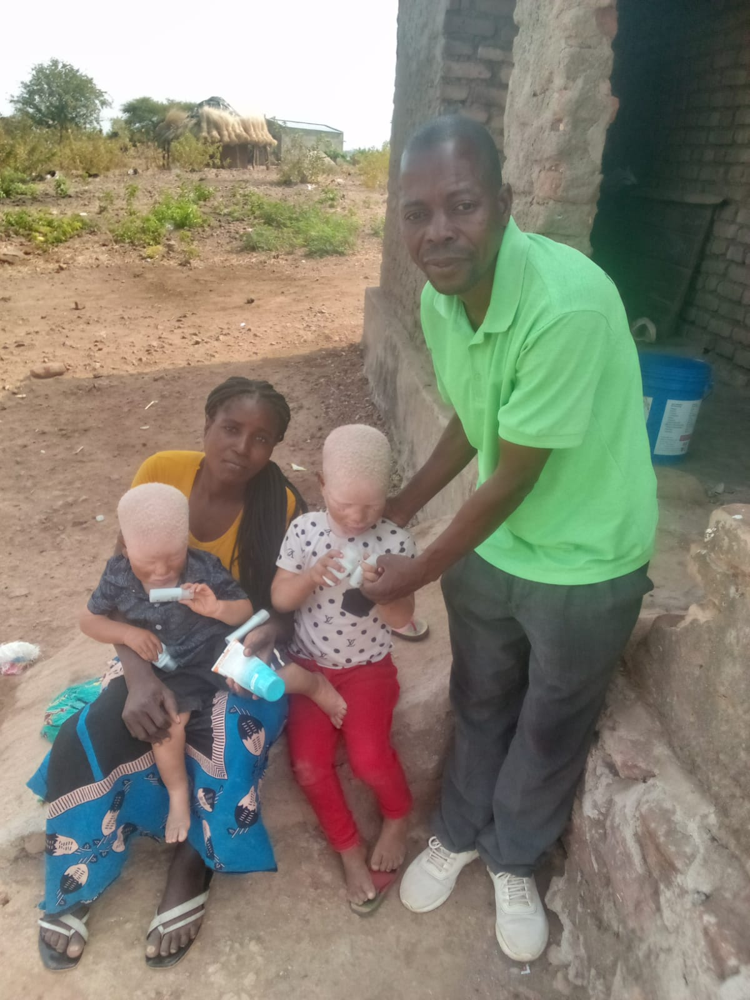

Onde TrabalhamosWhere We Work
Presença na Província de TetePresence across Tete Province
A AZEMAP tem a sua sede na Cidade de Tete e desenvolve actividades em vários distritos da província, podendo alargar o seu trabalho a outras zonas de Moçambique. AZEMAP is headquartered in Tete City and carries out activities across several districts of the province, with the potential to extend its work to other parts of Mozambique.
DistritosDistricts
Alcance geográficoGeographic reach
Esta lista é actualizada conforme as actividades da AZEMAP se confirmam em cada zona. A presença permanente em todos os distritos ainda está em processo de verificação. This list is updated as AZEMAP's activities are confirmed in each area. Permanent presence across every district is still being verified.
- Cidade de TeteActivoActive
- MoatizeOcasionalOccasional
- Mucumbura (Cahora Bassa)OcasionalOccasional
- ChifundeOcasionalOccasional
- Cahora BassaOcasionalOccasional
- AngóniaOcasionalOccasional
- CalomuéActivoActive

SedeHeadquarters
Cidade de TeteTete City
Bairro Filipe Samuel Magaia, Cidade de Tete, Província de Tete, Moçambique. Filipe Samuel Magaia neighbourhood, Tete City, Tete Province, Mozambique.